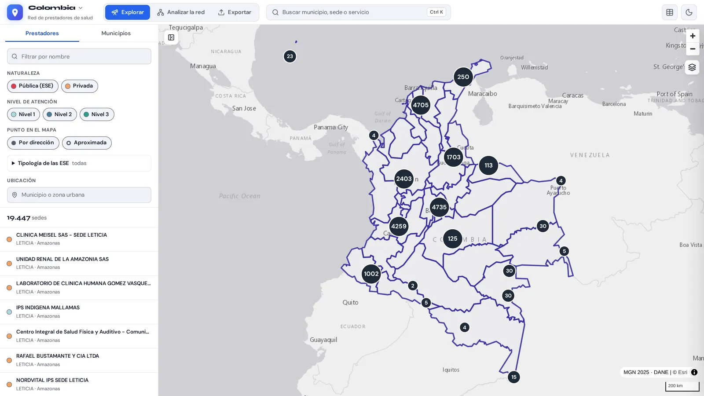
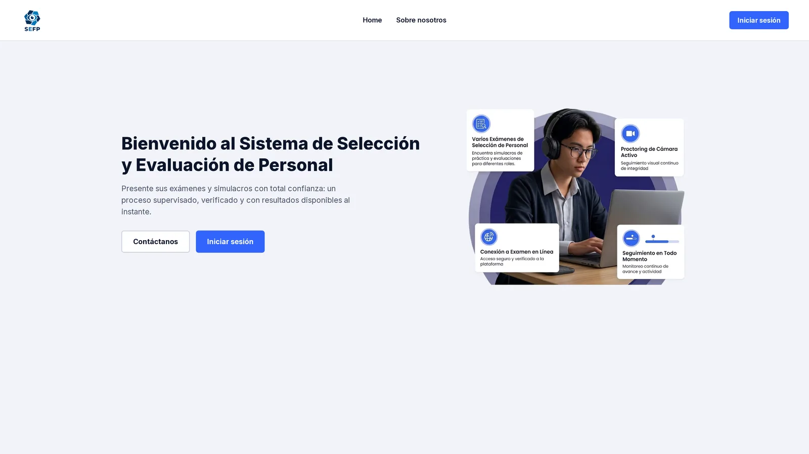
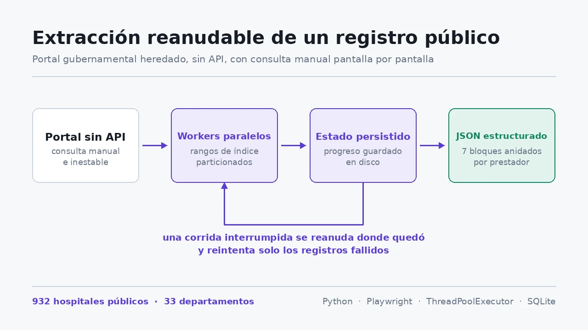
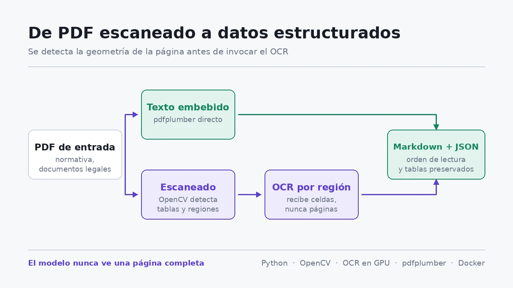

Sobre míAbout
Soy ingeniero de sistemas y trabajo en desarrollo backend e ingeniería de datos, sobre todo con Python, FastAPI y PostgreSQL. Casi todo mi trabajo ha sido en el sector salud en Colombia, donde la información rara vez llega limpia: registros públicos sin API, normas que solo existen como PDF escaneados y formatos de archivo de hace más de veinte años.
En FUNDASABERES estuve a cargo del backend y del modelo de datos de una plataforma de procesos de selección que está en producción, y construí un visor geográfico de toda la red de prestadores de salud del país. Antes, como practicante, automaticé la extracción del registro nacional de prestadores desde un portal sin API.
Disfruto modelar datos y procuro dejar sistemas que la siguiente persona pueda entender y mantener. Soy coautor de dos artículos publicados por Springer.
I'm a systems engineer working in backend development and data engineering, mostly with Python, FastAPI, and PostgreSQL. Most of my work has been in Colombia's public health sector, where data rarely comes in a clean format: government registries without an API, regulations that only exist as scanned PDFs, and file formats designed more than twenty years ago.
At FUNDASABERES I owned the backend and data model of a selection process platform that runs in production, and built a web map of the country's entire healthcare provider network. Before that, as an intern, I automated the extraction of the national provider registry from a website with no API.
I enjoy data modeling, and I try to leave systems that the next person can understand and maintain. I co-authored two papers published by Springer.
ProyectosProjects
-

Geovisor: la red de salud de Colombia en un mapaGeovisor: Colombia's healthcare network on a map
Visor geográfico para analizar las redes de referencia en salud. Reúne las 19.447 sedes del REPS en los 33 departamentos y calcula rutas por carretera entre ellas en menos de medio segundo. Integra 6,8 GB de cartografía del DANE y de OpenStreetMap, exporta mapas listos para imprimir y funciona sin conexión.
A web map for analyzing healthcare referral networks. It brings together all 19,447 facilities in the national registry across 33 departments and calculates road routes between them in under half a second. It combines 6.8 GB of maps from DANE and OpenStreetMap, exports print-ready maps, and works offline.
PythonFastAPIGeoPandasMapLibreSQLite -

SEFP en producciónin production
Plataforma de procesos de selecciónSelection process platformCon ella FUNDASABERES adelanta procesos de selección para otras entidades: inscripción, exámenes en línea con supervisión por video y evaluación. Proyecto de equipo en el que estuve a cargo del backend y del modelo de datos, y escribí la mayor parte de sus pruebas automatizadas.
FUNDASABERES uses it to run selection processes for other organizations: registration, proctored online exams, and evaluation. A team project in which I owned the backend and the data model and wrote most of its automated tests.
FastAPIPostgreSQLSQLAlchemypytestDocker -

REPS Scraper↗
Extrae el registro nacional de prestadores de salud desde un portal sin API: los 932 hospitales públicos del país con sus sedes, servicios y capacidad instalada. Guarda su avance y continúa donde quedó si el portal falla.
Extracts Colombia's national healthcare provider registry from a website with no API: all 932 public hospitals with their facilities, services, and installed capacity. It saves its progress and resumes when the site fails.
PythonPlaywrightSQLite -

doc-ocr↗
De PDF escaneado a datosFrom scanned PDF to dataConvierte normas escaneadas en texto consultable conservando sus tablas. Detecta la estructura de la página antes del OCR, así las columnas no se mezclan.
Turns scanned regulations into searchable text while keeping their tables intact. It detects the page layout before running OCR, so columns don't get mixed up.
PythonOpenCVpdfplumber -
NASA Space Apps · 2025
NASA Studies API↗
API para explorar 1.119 estudios de biología espacial de la NASA. Filtra por organismo y palabras clave, y redacta un título y un resumen para cualquier grupo de estudios con un modelo de lenguaje que corre en local, sin servicios externos.
An API for exploring 1,119 NASA space biology studies. It filters by organism and keyword, and writes a title and summary for any group of studies with a language model that runs locally, with no external services.
FastAPIllama.cppGGUF -
Proyecto de grado · 2025Capstone · 2025
VACS↗
Control de acceso vehicularVehicle access controlBackend de un sistema de control de acceso vehicular, construido con mi equipo y organizado en módulos para vehículos, registros de acceso, incidentes y permisos. Publicado por Springer.
Backend of a vehicle access control system, built with my team and organized into modules for vehicles, access logs, incidents, and permissions. Published by Springer.
NestJSTypeScriptPostgreSQLRedis
ExperienciaExperience
-
Ene – Ago 2026Jan – Aug 2026
Ingeniero de SoftwareSoftware Engineer · FUNDASABERES
- A cargo del backend y del modelo de datos de SEFP, en producción desde julio de 2026.
- Geovisor: 19.447 sedes en los 33 departamentos y rutas por carretera en menos de medio segundo.
- Conversor de los RIPS (facturación en salud) del formato del año 2000 al que exige la normativa de 2023.
- Herramienta que convierte normas escaneadas en texto consultable, conservando sus tablas.
- Owned the backend and data model of SEFP, in production since July 2026.
- Geovisor: 19,447 facilities in all 33 departments, with road routes in under half a second.
- Converter for health billing records (RIPS) from the 2000 format to the one required by 2023 regulations.
- A tool that turns scanned regulations into searchable text while keeping their tables intact.
PythonFastAPIPostgreSQLAlembicDocker -
Jun – Dic 2025Jun – Dec 2025
Practicante de Ingeniería de SoftwareSoftware Engineer Intern · FUNDASABERES
- La mayor parte del backend de COMPETEA, la primera versión de la plataforma, con más de 20 procesos de selección reales.
- Despliegues a producción automatizados con GitHub Actions.
- Extractor del registro nacional de prestadores de salud (REPS) desde un portal sin API.
- Built most of the backend of COMPETEA, the platform's first version, which ran more than 20 real selection processes.
- Automated production deployments with GitHub Actions.
- Built the extractor for the national healthcare provider registry (REPS) from a website with no API.
FastAPINext.jsGitHub ActionsPlaywright
- BackendBackend
- Python · FastAPI · SQLAlchemy · Alembic · Pydantic · NestJS · TypeScript
- DatosData
- PostgreSQL · SQLite · Redis · GeoPandas · Playwright · OpenCV
- EntregaDelivery
- Docker · GitHub Actions · pytest · Linux
- FormaciónEducation
- Ingeniería de Sistemas y ComputaciónB.S. Systems and Computer Engineering · Universidad Tecnológica de Bolívar · 2021–2025
- IdiomasLanguages
- Español nativo · Inglés B2Spanish (native) · English (B2)
PublicacionesPublications
ContactoContact
¿Trabajamos juntos?Let's work together
Busco trabajo como ingeniero backend o de datos, remoto o en Colombia. También tomo proyectos de automatización y extracción de datos.
I'm looking for backend or data engineering roles, remote or in Colombia. I also take on automation and data extraction projects.
EscríbemeEmail me →leonardomendoza2003@gmail.com